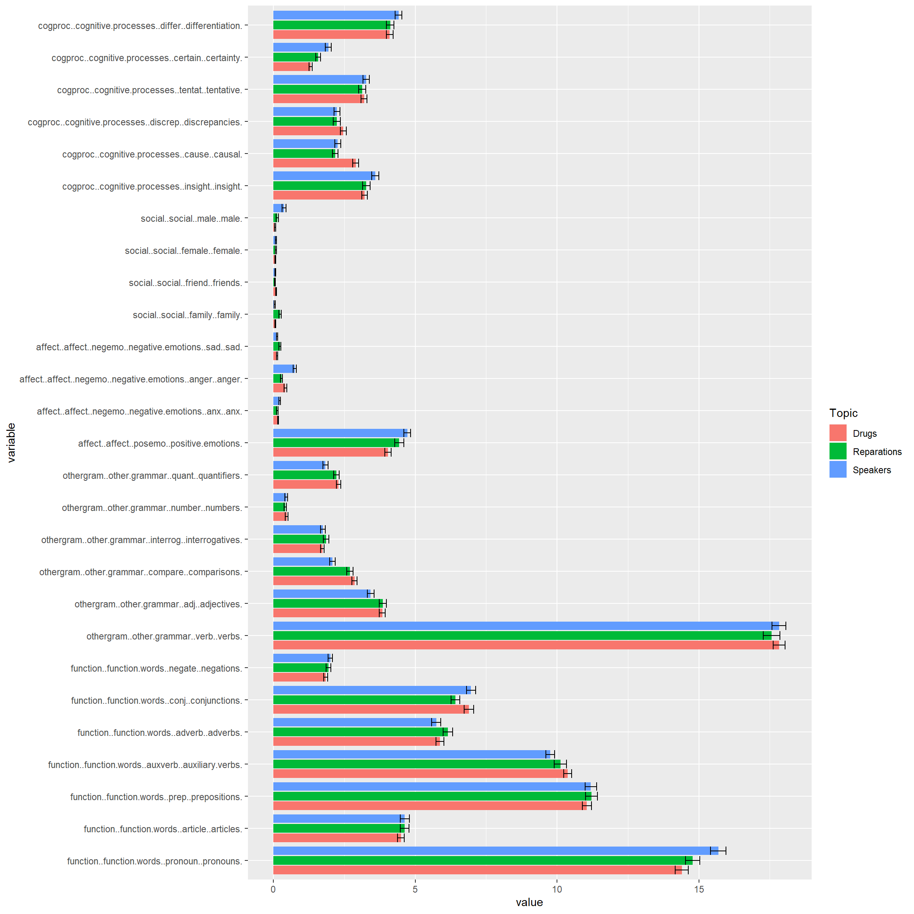
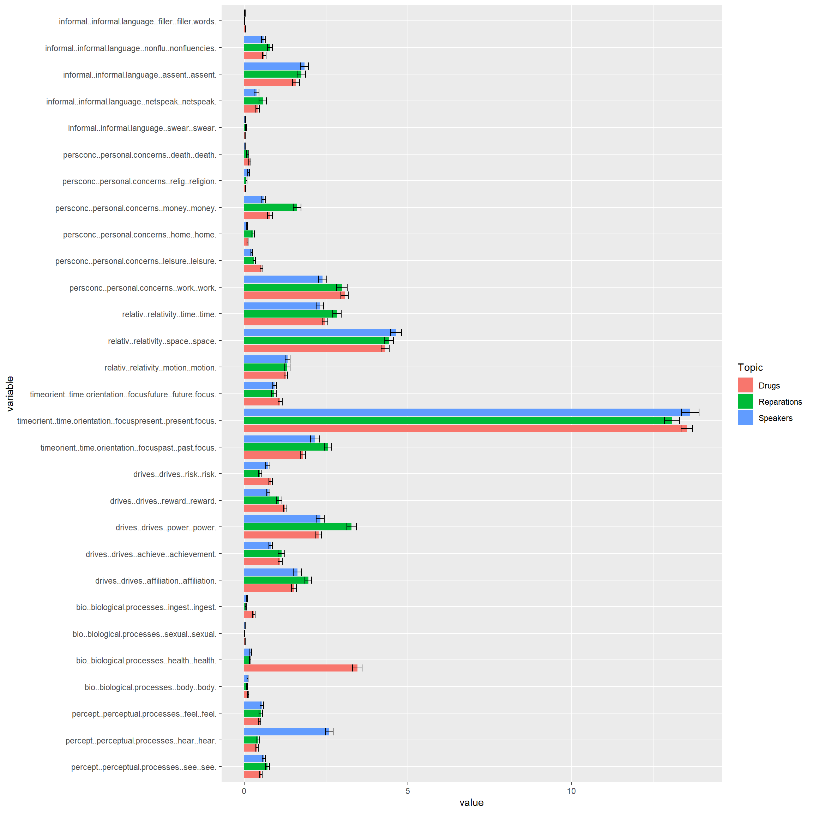
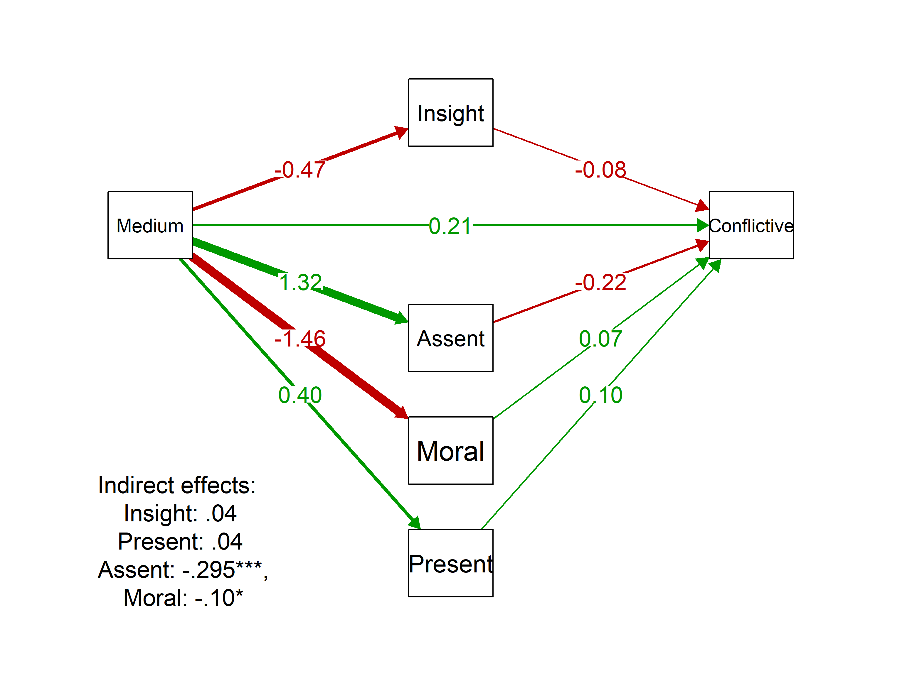
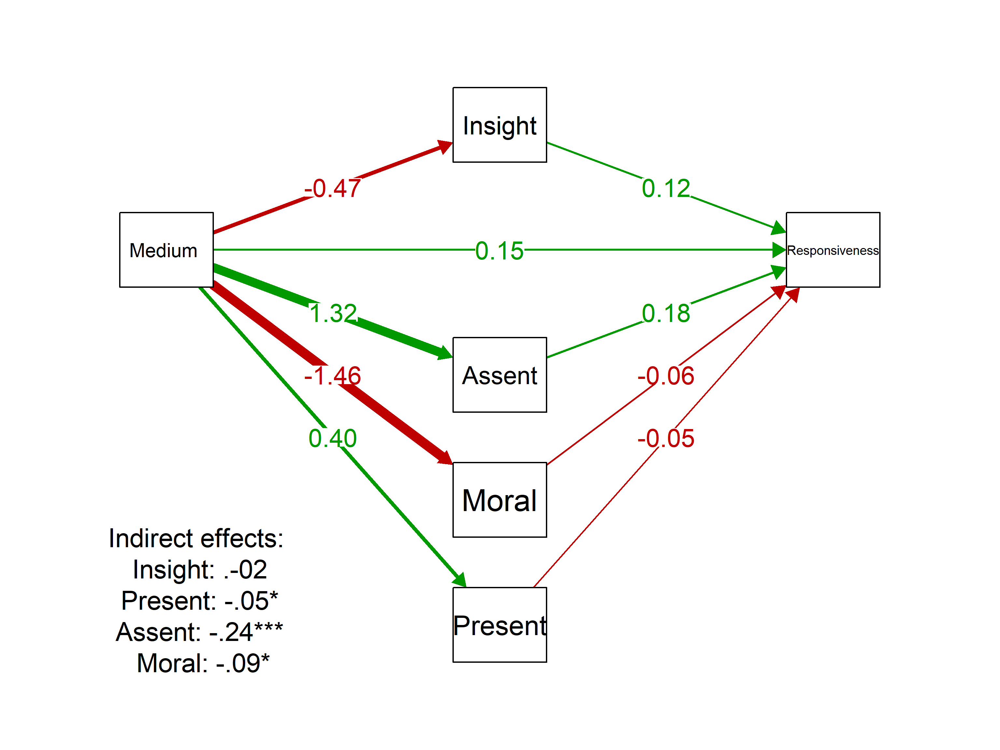

Preliminary Text-Analyses
Cristian Rodriguez
8/8/2019
Data Structuring
The transcriptions were processed by separating each line of text, labeling pair, participant, topic, extension and medium. Different data structures were produced (word-level, intervention-level, person-level, pair-level, condition-level). For these results, all participant interventions were grouped and analyzed with the liwc_alike() function of the quanteda package. The word categories are identical to those from the LIWC software. Additionally, output scores (how responsive was your partner, how conflicted was the conversation, “how much mind” does your partner have) were appended for each participant, as well as the scores given by the conversation partner. Variables labeled as alt_ indicate partner perception.
Descriptives
| No | Variable | Stats / Values | Freqs (% of Valid) | Graph |
|---|---|---|---|---|
| 1 | Medium [character] |
1. Audio 2. Text |
202 (49.8%) 204 (50.2%) |
IIIIIIIII IIIIIIIIII |
| 2 | Extension [character] |
1. Long 2. Short |
206 (50.7%) 200 (49.3%) |
IIIIIIIIII IIIIIIIII |
| 3 | Dehum [numeric] |
Mean (sd) : 5.4 (0.9) min < med < max: 2.7 < 5.5 < 6.9 IQR (CV) : 1.3 (0.2) |
46 distinct values | : . . : : : : : : : . : : : : : : . : : : : : : : |
| 4 | Conflict [numeric] |
Mean (sd) : 1.6 (1.2) min < med < max: 0 < 1.5 < 5.5 IQR (CV) : 2 (0.7) |
22 distinct values | : : : : . : : : : : : : . : : : : : : : . |
| 5 | Respons [numeric] |
Mean (sd) : 4.5 (1.1) min < med < max: 0.8 < 4.8 < 6 IQR (CV) : 1.2 (0.2) |
22 distinct values | : . : : : : : : . : : : : : . . : : : : : : : |
| 6 | alt_Dehum [numeric] |
Mean (sd) : 5.4 (0.9) min < med < max: 2.7 < 5.5 < 6.9 IQR (CV) : 1.3 (0.2) |
46 distinct values | : . . : : : : : : : . : : : : : : . : : : : : : : |
| 7 | alt_Conf [numeric] |
Mean (sd) : 1.6 (1.2) min < med < max: 0 < 1.5 < 5.5 IQR (CV) : 2 (0.7) |
22 distinct values | : : : : . : : : : : : : . : : : : : : : . |
| 8 | alt_Resp [numeric] |
Mean (sd) : 4.5 (1.1) min < med < max: 0.8 < 4.8 < 6 IQR (CV) : 1.2 (0.2) |
22 distinct values | : . : : : : : : . : : : : : . . : : : : : : : |
| 9 | function..function.words. [numeric] |
Mean (sd) : 50.3 (4) min < med < max: 34.7 < 50.2 < 62.9 IQR (CV) : 5.2 (0.1) |
337 distinct values | : : : : : : : : . : : : : |
| 10 | affect..affect. [numeric] |
Mean (sd) : 6 (1.8) min < med < max: 1.6 < 5.8 < 14.6 IQR (CV) : 2.1 (0.3) |
285 distinct values | : : : : : . : : : : . : : : : : . |
| 11 | social..social. [numeric] |
Mean (sd) : 8.3 (2.8) min < med < max: 1.8 < 7.9 < 23.1 IQR (CV) : 3.1 (0.3) |
323 distinct values | : : : . : : : : : . : : : : . |
| 12 | cogproc..cognitive.processes. [numeric] |
Mean (sd) : 15.1 (3.1) min < med < max: 0 < 15.1 < 25.4 IQR (CV) : 3.8 (0.2) |
345 distinct values | : : : : . : : : : : : . : : : : . |
| 13 | percept..perceptual.processes. [numeric] |
Mean (sd) : 2.3 (1.6) min < med < max: 0 < 2 < 9.7 IQR (CV) : 1.9 (0.7) |
274 distinct values | : : : : : : . : : : : : : : : : . . |
| 14 | bio..biological.processes. [numeric] |
Mean (sd) : 1.7 (2) min < med < max: 0 < 0.7 < 9.8 IQR (CV) : 2.5 (1.2) |
218 distinct values | : : : : : : : . . . |
| 15 | drives..drives. [numeric] |
Mean (sd) : 6.5 (2.3) min < med < max: 0 < 6.1 < 20.6 IQR (CV) : 2.7 (0.4) |
313 distinct values | : : : : : . : : . : : : : . |
| 16 | relativ..relativity. [numeric] |
Mean (sd) : 8.2 (2.2) min < med < max: 2.6 < 8 < 14.7 IQR (CV) : 2.6 (0.3) |
306 distinct values | : : : : : : : : : : : : : . : : : : : : : . . |
| 17 | informal..informal.language. [numeric] |
Mean (sd) : 2.7 (2.1) min < med < max: 0 < 2.1 < 13.7 IQR (CV) : 2.7 (0.8) |
279 distinct values | : : : : : : : : : : . : : : : : . |
By Medium
| Medium | Mind | Conflict | Responsiveness | Function | Affective | Social | Cognitive | Perceptual | Biological | Drives | Orientation | Informal |
|---|---|---|---|---|---|---|---|---|---|---|---|---|
| Audio | 5.62 | 1.56 | 4.7 | 50.22 | 5.56 | 7.69 | 14.79 | 2.21 | 1.38 | 5.37 | 8.06 | 3.43 |
| Text | 5.27 | 1.67 | 4.3 | 50.39 | 6.35 | 8.86 | 15.41 | 2.47 | 2.03 | 7.56 | 8.32 | 1.88 |

| Variable | t.stat | p.value | LL | UL | Cohens.D | Sig |
|---|---|---|---|---|---|---|
| Mind - attributed by partner | 3.867 | 0.000 | 0.173 | 0.530 | 0.384 | *** |
| Conflict - attributed by partner | -0.924 | 0.356 | -0.343 | 0.124 | -0.092 | |
| Responsiveness - attributed by partner | 3.728 | 0.000 | 0.191 | 0.617 | 0.370 | *** |
| Function words | -0.420 | 0.675 | -0.958 | 0.621 | -0.042 | |
| Affective words | -4.607 | 0.000 | -1.119 | -0.449 | -0.457 | *** |
| Social words | -4.298 | 0.000 | -1.711 | -0.636 | -0.427 | *** |
| Cognitive words | -2.009 | 0.045 | -1.214 | -0.013 | -0.199 |
|
| Perceptual words | -1.669 | 0.096 | -0.576 | 0.047 | -0.166 | |
| Biological words | -3.288 | 0.001 | -1.041 | -0.262 | -0.326 | ** |
| Drive-related words | -10.790 | 0.000 | -2.591 | -1.792 | -1.071 | *** |
| Relative words (space, time) | -1.212 | 0.226 | -0.687 | 0.163 | -0.120 | |
| Informal language | 8.140 | 0.000 | 1.171 | 1.917 | 0.808 | *** |
Comments: Higher mind (t =3.87,d = 0.38 and responsiveness (t =3.728,d = 0.37) attributed by partner in Audio over Text, but no differences in Conflict. Informal language is higher (t =8.14,d = 0.81) in Audio, whereas words related to affect (t =-4.61,d = -0.46), social relations (t =-4.3,d = -0.43), biological processes (t =-3.29,d = -0.33)and drives (affiliation, power, etc.; t =-10.79,d = -1.07) are more predominant in Text-based conversations.
By Condition
| Extension | Mind | Conflict | Responsiveness | Function | Affective | Social | Cognitive | Perceptual | Biological | Drives | Orientation | Informal |
|---|---|---|---|---|---|---|---|---|---|---|---|---|
| Long | 5.42 | 1.71 | 4.52 | 50.43 | 5.97 | 7.94 | 15.16 | 2.28 | 1.76 | 6.26 | 8.16 | 2.73 |
| Short | 5.46 | 1.51 | 4.48 | 50.17 | 5.94 | 8.63 | 15.04 | 2.40 | 1.65 | 6.68 | 8.22 | 2.57 |

| Variable | t.stat | p.value | LL | UL | Cohens.D | Sig |
|---|---|---|---|---|---|---|
| Mind - attributed by partner | -0.465 | 0.642 | -0.225 | 0.139 | -0.046 | |
| Conflict - attributed by partner | 1.699 | 0.090 | -0.032 | 0.434 | 0.169 | |
| Responsiveness - attributed by partner | 0.424 | 0.672 | -0.170 | 0.264 | 0.042 | |
| Function words | 0.633 | 0.527 | -0.536 | 1.045 | 0.063 | |
| Affective words | 0.122 | 0.903 | -0.324 | 0.366 | 0.012 | |
| Social words | -2.505 | 0.013 | -1.246 | -0.150 | -0.249 |
|
| Cognitive words | 0.410 | 0.682 | -0.480 | 0.734 | 0.041 | |
| Perceptual words | -0.726 | 0.468 | -0.430 | 0.198 | -0.072 | |
| Biological words | 0.550 | 0.583 | -0.285 | 0.507 | 0.055 | |
| Drive-related words | -1.844 | 0.066 | -0.879 | 0.028 | -0.183 | |
| Relative words (space, time) | -0.253 | 0.800 | -0.483 | 0.373 | -0.025 | |
| Informal language | 0.775 | 0.439 | -0.244 | 0.561 | 0.077 |
Comments: There are basically no significant differences among outcomes or language use between Short and Long conditions.
Analyses
Correlations

NOTE: blank spaces are non-significant correlations
Comments: Responsiveness, Conflict and Mind perceived by partner (alt_Resp, alt_Conf, and alt_Dehum respectively) are negatively associated with words related to Social relations, Biological Processes and Drives (positively for conflict); yet, positively associated with Informal language. Also perceived Conflict is associated with less affective words and more cognitive words.
Linear Plots
These plots represent the linear relationship of each word category with all three outcomes. Datapoints were not plotted to avoid getting messy plots.  Comments: Note that Social terms, Biological words, Drive-related words -and to some extent Cognitive terms- describe similar patterns: the more frequent the use, the less likeable is the partner
Comments: Note that Social terms, Biological words, Drive-related words -and to some extent Cognitive terms- describe similar patterns: the more frequent the use, the less likeable is the partner
Stepwise Regressions
For each one of the three partner perception outcomes, I ran astepwise regression model. As predictors, all sub-categories of words were introduced - except for function words were excluded from the analyses, since they were not giving consistent results and are hard to intepret. The three models were generated by taken the best regression from the stepwise analyses, and keeping only those predictors whose Beta coefficient was higher than 1.
| Attributes perceived by partner | |||
| Mind | Conflict | Responsiveness | |
| Negative Affect: Sadness | -.47* (.20) | ||
| Social: Friends | .49 (.27) | .61 (.31) | |
| Biological: Health | -.08*** (.02) | ||
| Positive Affect | -.17*** (.04) | ||
| Social: Female | -.39 (.26) | ||
| Cognitive: Insight | -.11* (.04) | .13** (.04) | |
| Drives: Achievement | -.19** (.06) | .10 (.07) | |
| Drives: Reward | .17* (.07) | ||
| Cognitive: Causal | -.14** (.04) | ||
| Drive: Affiliation | -.09 (.04) | ||
| Time Orientation: Present | -.04* (.02) | .12*** (.02) | -.05* (.02) |
| Concerns: Home | .21 (.20) | ||
| Informal Language: Assent | .06 (.03) | -.15*** (.04) | .19*** (.04) |
| Constant | 5.99*** (.25) | 1.26*** (.33) | 4.92*** (.31) |
| Observations | 406 | 406 | 406 |
| R2 | .10 | .15 | .16 |
| Adjusted R2 | .08 | .14 | .14 |
| Residual Std. Error | .89 (df = 399) | 1.11 (df = 399) | 1.03 (df = 397) |
| F Statistic | 7.06*** (df = 6; 399) | 11.85*** (df = 6; 399) | 9.14*** (df = 8; 397) |
| Note: | p<0.05; p<0.01; p<0.001 | ||
Additional Analyses
Word Category Variations by Topics
These plots show all LIWC categories analyzed by Topic. In most of the categories there are no notable variations, except for some that show significant differences. Below the plots, we give some insights about those differences.

Some insights of more specific analyses:
- Differences in Drive words = Power words for reparations.
- Differences in Bio words = health-related word in drugs (i.e,pain).
- Differences in Perceptual words = hearing-related words in speakers (i.e. speaker, list, hush, sound, yelling)
- Differences in Social words = male-related words in speakers (e.g., he, guy ) and family-related in reparations (e.g., grandsons, relatives, folks).
- Differences in Affective words = anger-related words in speakers (e.g., asshole, jerk, intimidation, mean, threat)
- Differences in Function words: small and hard to interpret:
- more pronouns but less adjectives, comparisons, quantifiers in speakers
- more auxiliary verbs in drugs, and reparations more than speakers
- less conjunctions in reparations
Keywords in context (KWIC) analysis
Sample of keywords related to Insight cognitive processes.| docname | from | to | pre | keyword | post | pattern |
|---|---|---|---|---|---|---|
| text1 | 25 | 25 | good one as well . | Seems | we’ll be debating government reparations | seems |
| text1 | 50 | 50 | very extremist . I DO | think | the government should be helping | think |
| text1 | 98 | 98 | at risk youth . I | feel | as though it isn’t fair | feel |
| text1 | 129 | 129 | for individualized stipends . I | think | something broader scoped , like | think |
| text1 | 135 | 135 | something broader scoped , like | learning | centers or health clinics that | learning |
| text1 | 156 | 156 | taxed for . Do you | believe | that direct individualized reparations should | believe |
| text1 | 193 | 193 | socioeconomic status ? I don’t | think | they have either . An | think |
| text1 | 225 | 225 | are so many people I | know | who have risked it all | know |
| text1 | 270 | 270 | guarantee , I see no | reason | to not allow reparationsThe problem | reason* |
| text1 | 292 | 292 | like allocating to social causesWhich | means | , likely , more taxes | means |
| text2 | 15 | 15 | controversial speakers mostly for the | effect | it has on the students | effect* |
| text2 | 22 | 22 | has on the students i | think | generally different viewpoints should be | think |
| text2 | 59 | 59 | could endanger studentsand i dont | believe | that theres space for that | believe |
| text2 | 70 | 70 | on campusas it hurts the | learning | environmentwhat do you think ? | learning |
| text2 | 74 | 74 | the learning environmentwhat do you | think | ? i understand your point | think |
| docname | from | to | pre | keyword | post | pattern |
|---|---|---|---|---|---|---|
| text1 | 3 | 3 | Hello ! | It’s | nice to meet you It’s | it’s |
| text1 | 6 | 6 | Hello ! It’s nice to | meet | you It’s been a good | meet |
| text1 | 8 | 8 | It’s nice to meet you | It’s | been a good day so | it’s |
| text1 | 16 | 16 | good day so far ! | Hope | you’ve had a good one | hope |
| text1 | 25 | 25 | good one as well . | Seems | we’ll be debating government reparations | seems |
| text1 | 27 | 27 | as well . Seems we’ll | be | debating government reparations for slavery | be |
| text1 | 35 | 35 | reparations for slavery . I’d | like | to first say that my | like* |
| text1 | 38 | 38 | . I’d like to first | say | that my stance on this | say |
| text1 | 44 | 44 | that my stance on this | isn’t | very extremist . I DO | isn’t |
| text1 | 49 | 49 | isn’t very extremist . I | DO | think the government should be | do |
| text1 | 50 | 50 | very extremist . I DO | think | the government should be helping | think |
| text1 | 54 | 54 | DO think the government should | be | helping communities impacted by slavery | be |
| text1 | 82 | 82 | a more community level . | Like | providing communities in Oakland with | like* |
| text1 | 91 | 91 | Oakland with afterschool centers that | can | help at risk youth . | can |
| text1 | 98 | 98 | at risk youth . I | feel | as though it isn’t fair | feel |
Comment: Both categories deal with extremely common expressions; so it’s hard to interpret what that could mean in terms of difference between conditions or potential mediational effects. Also, just as assent words, it could be a confound of spoken conversation.
Mediation Analyses
Separate Analyses
We ran mediation analyses for the three partner attribution outcomes (Mind-like , Conflictive and Responsive). Four word categories were tested for mediation between Medium - Audio vs. Text - and outcomes: Assent words, Present-orientation words, Insight words and Moralized words (i.e., part of the MF dictionary). In the table below we listed the indirect effects of all mediators for all outcomes, run separately.
| Mediator | Mindful | Conflictive | Responsive |
|---|---|---|---|
| Assent | 0.07 | -0.33*** | 0.26*** |
| Present | -0.02 | 0.03 | -0.01 |
| Insight | 0 | 0 | -0.04 |
| Moral | 0.05 | -0.14** | 0.13** |
Complete Mediation Models
Then, we ran full SEM introducing the four word categories as mediators for each one of the outcomes.
Partner Humanization
Partner perceived as Conflictive

Partner perceived as Responsive
